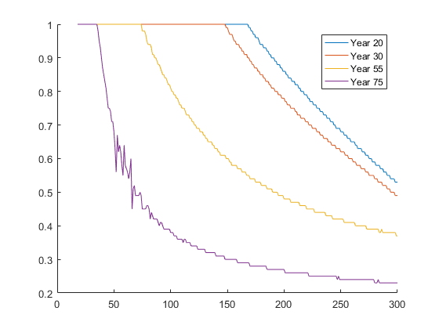

clearvars
tb=20;
tr=65;
td=100;
nqp=3;
nalfa=101;
ncash=401;
nc=1501;
delta=0.96; gamma= 10.0; infinity=-1e+10;
rf=1.02; sigma_r=0.157^2; exc= 0.04; reg_coef=0.0;
ret_fac=0.68212;
a=-2.170042+2.700381;
b1=0.16818;
b2=-0.0323371/10;
b3=0.0019704/100;
sigt_y=0.0738;
sigp_y=0.01065;
alfa=zeros(2,ncash);
c=zeros(2,ncash);
v=zeros(2,ncash);
ones_nqp_1=1.0;
survprob=0.0;
delta2=repmat(0.96,td-tb+1,1);
infinity=-1e+10;
consumption=zeros(td-tb,ncash);
riskyshare=zeros(td-tb,ncash);
weig(1,1)= 0.1666666666666;
weig(2,1)= 0.6666666666666;
weig(3,1)= 0.1666666666666;
grid(1,1)= -1.73205080756887;
grid(2,1)= 0.0;
grid(3,1)= 1.73205080756887;
tn = td-tb+1;
gr=grid*sigma_r^0.5;
eyp=grid*sigp_y^0.5;
eyt=grid*sigt_y^0.5;
mu = exc+rf;
expeyp = exp(eyp);
galfa=zeros(length(nalfa),1);
for ind1=1:nalfa
galfa(ind1,1)=(ind1-1.0)/(nalfa-1.0);
end
gret = mu*ones_nqp_1+gr;
gcash=zeros(1,length(ncash));
for ind1=1:ncash
gcash(1,ind1)=4.0+(ind1-1.0)*1.0;
end
aux3(:,1) = gcash(1,:);
gc=zeros(1,length(nc));
for ind1=1:nc
gc(1,ind1)=0.0+(ind1-1.0)*0.25;
end
f_y=zeros(length(eyt),tr-tb);
for ind1=tb+1:tr
avg = exp(a+b1*ind1+b2*ind1^2+b3*ind1^3);
f_y(:,ind1-tb) = avg*exp(eyt(:,1));
end
ret_y= ret_fac.*avg;
v(1,:)= utility(gcash,ncash,gamma);
c(1,:)= gcash(1,:);
u=utility(gc,nc,gamma);
tt=80;
for ind1=1:35
t= tt-ind1+1;
secd=spline(aux3,v(1,:),ncash,gamma);
for ind2=1:ncash
if ( t==(tn-1) )
lowc= c(1,ind2)/2.0;
highc= c(1,ind2);
if gcash(1,ind2)>=50
highc= c(1,ind2)/1.5;
end
elseif ( t==(tn-2) )
lowc= c(1,ind2)/2.5;
highc= c(1,ind2);
if gcash(1,ind2)>=50
highc= c(1,ind2)/1.2;
end
elseif ( t<(tn-2) && t>(tn-5) )
lowc= c(1,ind2)/3.5;
highc= c(1,ind2)+0.0;
if gcash(1,ind2)>=50
highc= c(1,ind2)/1.1;
end
else
lowc= c(1,ind2)-10.0;
highc= c(1,ind2)+10.0;
end
lowc2=ntoi(lowc,1,gc',nc);
highc2=ntoi(highc,1,gc',nc);
nc_r= highc2-lowc2+1;
gc_r=zeros(1,nc_r);
gc_r(1,:)= gc(1,lowc2:highc2);
lowalfa2= 1.0;
highalfa2= nalfa;
if ( gcash(1,ind2)>40.0 && t<(tn-1) )
lowalfa= alfa(1,ind2)-0.2;
highalfa= alfa(1,ind2)+0.2;
lowalfa2=ntoi(lowalfa,1,galfa,nalfa);
highalfa2=ntoi(highalfa,1,galfa,nalfa);
end
nalfa_r= highalfa2-lowalfa2+1;
galfa_r=zeros(nalfa_r,1);
galfa_r(:,1) = galfa(lowalfa2:highalfa2,1);
invest=zeros(nc_r,1); u_r=zeros(nc_r,1);
invest(:,1) = gcash(1,ind2)*ones(nc_r,1)-gc_r(1,:)';
u_r(:,1) = u(1,lowc2:highc2);
u2=zeros(nc_r,1);
for ind4=1:nc_r
if invest(ind4,1)<0.0
u2(ind4,1) = infinity;
else
u2(ind4,1) = u_r(ind4,1);
end
end
invest = max(invest,0.0);
u3=zeros(nc_r,nalfa_r);
for ind4=1:nalfa_r
u3(:,ind4)=u2(:,1);
end
u3 = max(u3,infinity);
v1=zeros(nc_r,nalfa_r);
nv=zeros(nc_r,nalfa_r);
nw=zeros(nc_r,nalfa_r);
for ind5=1:nqp
nw=fci(invest,nc_r,galfa_r,nalfa_r,gret(ind5,1),rf);
nv=evr(nw,nc_r,nalfa_r,v(1,:),1,ncash,ret_y,aux3,secd);
v1 = v1+nv*weig(ind5,1);
end
vv = u3+delta2(t,1)*v1;
vv = max(vv,infinity);
auxv=vv(:);
v(2,ind2)=max(auxv);
pt=find(auxv==max(auxv),1);
aux2=floor((pt-1)/nc_r);
alfa(2,ind2) = galfa(aux2+lowalfa2,1);
c(2,ind2) = gc(1,pt-aux2*nc_r+lowc2-1);
end
v(1,:)=v(2,:);
c(1,:)=c(2,:);
alfa(1,:)=alfa(2,:);
consumption(t,:)=c(2,:);
riskyshare(t,:)=alfa(2,:);
end
for ind1=1:tt-35
t=45-ind1+1;
secd=spline(aux3,v(1,:),ncash,gamma);
for ind2=1:ncash
if (t<tr-19 && t>tr-25)
lowc= c(1,ind2)-10.0;
highc= c(1,ind2)+10.0;
else
lowc= c(1,ind2)-5.0;
highc= c(1,ind2)+5.0;
end
lowc2=ntoi(lowc,1,gc',nc);
highc2=ntoi(highc,1,gc',nc);
nc_r= highc2-lowc2+1;
gc_r=zeros(1,nc_r);
gc_r(1,:)= gc(1,lowc2:highc2);
lowalfa2= 1.0;
highalfa2= nalfa;
if ( gcash(1,ind2)>40.0 && t<(tn-1) )
lowalfa= alfa(1,ind2)-0.2;
highalfa= alfa(1,ind2)+0.2;
lowalfa2=ntoi(lowalfa,1,galfa,nalfa);
highalfa2=ntoi(highalfa,1,galfa,nalfa);
end
nalfa_r= highalfa2-lowalfa2+1;
galfa_r=zeros(nalfa_r,1);
galfa_r(:,1) = galfa(lowalfa2:highalfa2,1);
invest=zeros(nc_r,1); u_r=zeros(nc_r,1);
invest(:,1) = gcash(1,ind2)*ones(nc_r,1)-gc_r(1,:)';
u_r(:,1) = u(1,lowc2:highc2);
u2=zeros(nc_r,1);
for ind4=1:nc_r
if invest(ind4,1)<0.0
u2(ind4,1) = infinity;
else
u2(ind4,1) = u_r(ind4,1);
end
end
invest = max(invest,0.0);
u3=zeros(nc_r,nalfa_r);
for ind4=1:nalfa_r
u3(:,ind4)=u2(:,1);
end
u3 = max(u3,infinity);
v1=zeros(nc_r,nalfa_r);
nv=zeros(nc_r,nalfa_r);
nw=zeros(nc_r,nalfa_r);
for ind5=1:nqp
nw=fci(invest,nc_r,galfa_r,nalfa_r,gret(ind5,1),rf);
nv=ev(nw,nc_r,nalfa_r,v(1,:),ncash,weig,nqp,f_y(:,t),expeyp,aux3,secd,gret(ind5,1),reg_coef);
v1 = v1+nv*weig(ind5,1);
end
vv = u3+delta2(t,1)*v1;
vv = max(vv,infinity);
auxv=vv(:);
v(2,ind2)=max(auxv);
pt=find(auxv==max(auxv),1);
aux2=floor((pt-1)/nc_r);
alfa(2,ind2) = galfa(aux2+lowalfa2,1);
c(2,ind2) = gc(1,pt-aux2*nc_r+lowc2-1);
end
v(1,:)=v(2,:);
c(1,:)=c(2,:);
alfa(1,:)=alfa(2,:);
consumption(t,:)=c(2,:);
riskyshare(t,:)=alfa(2,:);
end
figure; hold on;
plot(18:300,riskyshare(20,18:300)); plot(18:300,riskyshare(30,18:300));
plot(18:300,riskyshare(55,18:300)); plot(18:300,riskyshare(75,18:300));
legend('Year 20','Year 30','Year 55','Year 75')
function[util]=utility(values,ncols,gamma)
util(1,1:ncols) = (values(1,1:ncols).^(1-gamma))./(1-gamma);
end
function[y2]=spline(x,y,n,gam)
y=y';
yp1 = x(1,1)^(-gam);
y2(1,1)=-0.5;
u(1,1)=(3.0/(x(2,1)-x(1,1)))*((y(2,1)-y(1,1))/(x(2,1)-x(1,1))-yp1);
for i=2:n-1
sig = (x(i,1)-x(i-1,1))/(x(i+1,1)-x(i-1,1));
p = sig*y2(i-1,1)+2.0;
y2(i,1) = (sig-1.0)/p;
u(i,1) = (6.0*((y(i+1,1)-y(i,1))/(x(i+1,1)-x(i,1))-(y(i,1)-y(i-1,1))/(x(i,1)-x(i-1,1)))/(x(i+1,1)-x(i-1,1))-sig*u(i-1,1))/p;
end
y2(n,1) =0.0;
for k=n-1:-1:1
y2(k,1) = y2(k,1)*y2(k+1,1)+u(k,1);
end
end
function[ind]=ntoi(value,nrow,grid,n)
value(1:nrow,1)=value;
aux = min(value,grid(n,1));
aux = max(aux,grid(1,1));
step = (grid(n,1)-grid(1,1))/(n-1);
ind = round(((aux-grid(1,1)*1)/step)+1);
end
function[capinc]=fci(sav,nrow,galfa,n,ret,rf)
capinc=zeros(nrow,n);
for ind1=1:nrow
rp(:,1) = ret*galfa+rf*(ones(n,1)-galfa);
for ind2=1:n
capinc(ind1,ind2) = sav(ind1,1)*rp(ind2,1);
end
end
end
function[ev_out]=evr(cash,nrow,ncol,v,nro,nco,fy,grid,secondd)
inc=fy*ones(nrow,ncol)+cash;
inc=min(inc,grid(nco,1));
inc=max(inc,grid(1,1));
prob_li = 0.0;
aux=splint(grid,v(1,:),secondd,nco,inc,nrow,ncol);
ev_out=aux;
inc=5.0;
aux=splint(grid,v(1,:),secondd,nco,inc,nrow,ncol);
ev_out=(1-prob_li)*ev_out + prob_li*aux;
end
function[y]=splint(xa,ya,y2a,n,x,nrow,ncol)
y=zeros(nrow,ncol);
ya=ya';
[x_r,x_c]=size(x);
if x_r<nrow
x=repmat(x,nrow,1);
end
if x_c<ncol
x=repmat(x,1,ncol);
end
for indr=1:nrow
for indc=1:ncol
klo = 1;
khi = n;
while (khi-klo>1)
k=floor((khi+klo)/2);
if (xa(k,1)>x(indr,indc))
khi=k;
else
klo=k;
end
end
h = xa(khi,1)-xa(klo,1);
a = (xa(khi,1)-x(indr,indc))/h;
b = (x(indr,indc)-xa(klo,1))/h;
y(indr,indc) = a*ya(klo,1)+b*ya(khi,1)+((a^3-a)*y2a(klo,1)+(b^3-b)*y2a(khi,1))*(h^2)/6.0;
end
end
end
function[ev_out]=ev(cash,nrow,ncol,v,nco,prob,n,fy,eyp,grid,secondd,ret,reg_coef)
ev_out=0;
for ind1=1:n
for ind2=1:n
inc=(fy(ind1,1)*(eyp(ind2,1)+reg_coef*ret));
inc2=inc*ones(nrow,ncol)+cash;
inc2=min(inc2,grid(nco,1));
inc2=max(inc2,grid(1,1));
aux=splint(grid,v(1,:),secondd(:,1),nco,inc2,nrow,ncol);
v1=prob(ind1,1)*prob(ind2,1)*aux;
ev_out=ev_out+v1;
end
end
end
